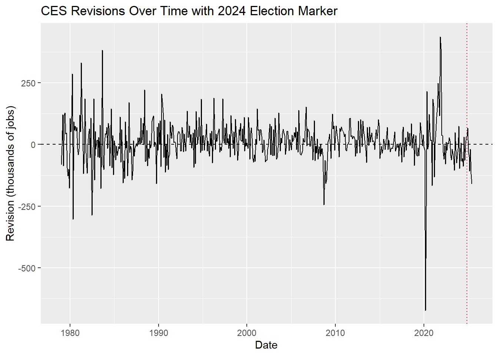
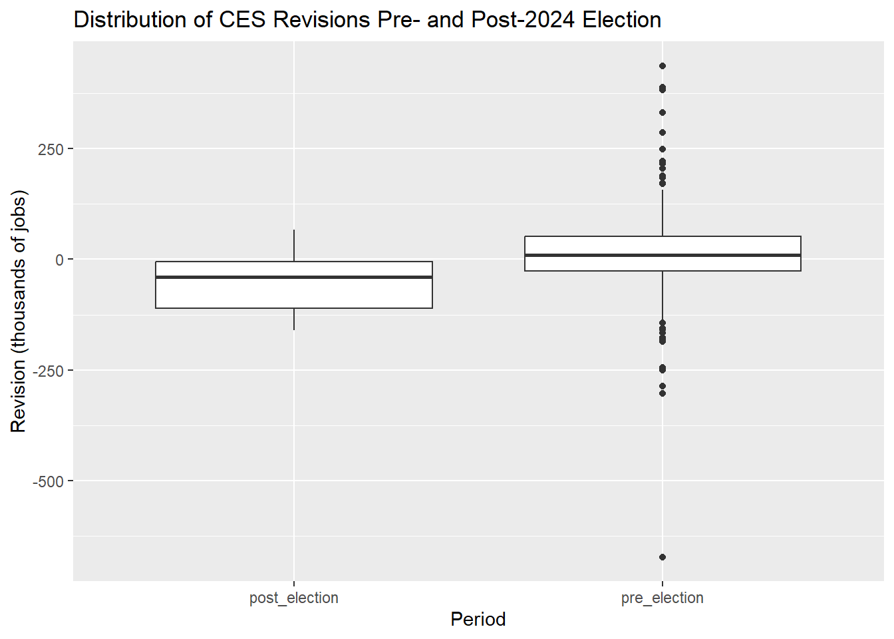
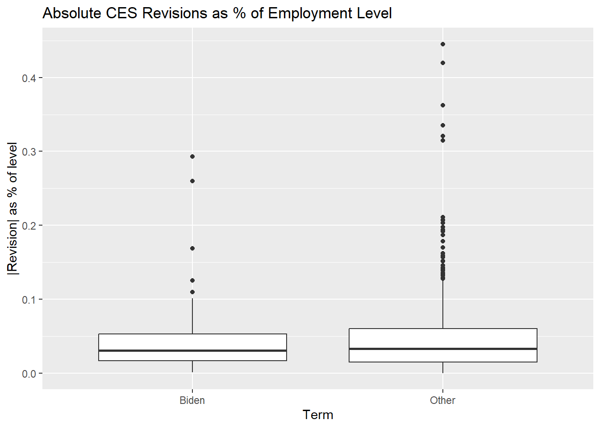

STA 9750 – Mini-Project 04
Introduction
In this mini–project, I use httr2 and rvest to replicate browser requests to the BLS website and acquire two datasets:
- Seasonally adjusted total nonfarm payroll levels (CES0000000001).
- Revisions to the CES nonfarm payroll employment estimates.
The code chunks below show the full workflow from HTTP requests to cleaned monthly data frames.
Task 1: CES Total Nonfarm Payroll Levels
In this section, I reproduce the browser’s POST request to SurveyOutputServlet using httr2, download the HTML table of seasonally adjusted total nonfarm payroll levels from 1979–2025, and reshape it into a monthly date / level data frame.
Task 1.1: Replicate the HTTP request
Show code
library(httr2)
library(rvest)
ces_req <- request("https://data.bls.gov/pdq/SurveyOutputServlet") |>
req_method("POST") |>
req_headers(
"User-Agent" = "chentenchi@gmail.com STA9750 mini-project (R)",
"Referer" = "https://data.bls.gov/pdq/SurveyOutputServlet"
) |>
req_body_form(
request_action = "get_data",
reformat = "true",
from_results_page = "true",
from_year = "1979",
to_year = "2025",
Go.x = "9",
Go.y = "4",
initial_request = "false",
data_tool = "surveymost",
series_id = "CES0000000001",
years_option = "specific_years"
)
ces_resp <- ces_req |>
req_perform()
ces_resp # check for Status: 200<httr2_response>
POST https://data.bls.gov/pdq/SurveyOutputServlet
Status: 200 OK
Content-Type: text/html
Body: In memory (68205 bytes)Show code
# A tibble: 6 × 2
X1 X2
<chr> <chr>
1 Series Id: CES0000000001
2 Seasonally Adjusted Seasonally Adjusted
3 Series Title: All employees, thousands, total nonfarm, seasonally adjus…
4 Super Sector: Total nonfarm
5 Industry: Total nonfarm
6 NAICS Code: - Task 1.2: Extract and clean the CES table
Show code
# A tibble: 6 × 13
Year Jan Feb Mar Apr May Jun Jul Aug Sep Oct Nov Dec
<chr> <chr> <chr> <chr> <chr> <chr> <chr> <chr> <chr> <chr> <chr> <chr> <chr>
1 1979 88808 89055 89479 89417 89789 90108 90217 90300 90327 90481 90573 90672
2 1980 90800 90883 90994 90849 90420 90101 89840 90099 90213 90490 90747 90943
3 1981 91033 91105 91210 91283 91296 91490 91601 91565 91477 91380 91171 90895
4 1982 90565 90563 90434 90150 90107 89865 89521 89363 89183 88907 88786 88771
5 1983 88990 88917 89090 89364 89644 90021 90437 90129 91247 91520 91875 92230
6 1984 92673 93157 93429 93792 94098 94479 94789 95032 95344 95629 95982 96107Show code
# reshape CES table to monthly date/level
ces_monthly <- ces_table |>
filter(!is.na(Year), Year != "") |>
pivot_longer(
cols = Jan:Dec,
names_to = "month",
values_to = "level"
) |>
mutate(
level = readr::parse_number(level),
date = lubridate::my(paste(month, Year))
) |>
filter(
!is.na(level),
!is.na(date),
date <= lubridate::ymd("2025-06-01")
) |>
arrange(date) |>
select(date, level)
head(ces_monthly)# A tibble: 6 × 2
date level
<date> <dbl>
1 1979-01-01 88808
2 1979-02-01 89055
3 1979-03-01 89479
4 1979-04-01 89417
5 1979-05-01 89789
6 1979-06-01 90108Task 2: CES Revisions Tables
Here I access the static CES revisions page using httr2, extract the year-specific revision tables with rvest, and build a function that returns the monthly revisions for any year. I then apply this function from 1979–2025 and construct a data frame with:
date(first day of the month),original(first estimate),final(third estimate),revision = final - original.
Task 2.1: Download revisions page
Show code
library(httr2)
library(rvest)
library(dplyr)
library(tidyr)
library(lubridate)
library(readr)
# ---- Task 2: download CES revisions page ----
rev_req <- request("https://www.bls.gov/web/empsit/cesnaicsrev.htm") |>
req_method("GET") |>
req_headers(
"User-Agent" = "chentenchig@gmail.com STA9750 mini-project (R)",
"Referer" = "https://www.bls.gov/web/empsit/cesnaicsrev.htm"
)
rev_resp <- rev_req |>
req_perform()
rev_resp # check Status: 200<httr2_response>
GET https://www.bls.gov/web/empsit/cesnaicsrev.htm
Status: 200 OK
Content-Type: text/html
Body: In memory (401469 bytes)Show code
# A tibble: 15 × 14
X1 X2 X3 X4 X5 X6 X7 X8 X9 X10 X11 X12 X13
<chr> <chr> <chr> <chr> <chr> <chr> <chr> <chr> <chr> <chr> <chr> <chr> <chr>
1 Month Year Seas… Seas… Seas… Seas… Seas… Seas… Not … Not … Not … Not … Not …
2 Month Year Over… Over… Over… Revi… Revi… Revi… Over… Over… Over… Revi… Revi…
3 Month Year 1st 2nd 3rd 2nd … 3rd … 3rd … 1st 2nd 3rd 2nd … 3rd …
4 Jan. 2024 353 229 256 -124 27 -97 -2635 -2855 -2837 -220 18
5 Feb. 2024 275 270 236 -5 -34 -39 1141 1127 1119 -14 -8
6 Mar. 2024 303 315 310 12 -5 7 659 662 659 3 -3
7 Apr. 2024 175 165 108 -10 -57 -67 803 791 791 -12 0
8 May 2024 272 218 216 -54 -2 -56 917 844 841 -73 -3
9 Jun. 2024 206 179 118 -27 -61 -88 547 518 499 -29 -19
10 Jul. 2024 114 89 144 -25 55 30 -915 -954 -942 -39 12
11 Aug. 2024 142 159 78 17 -81 -64 263 318 332 55 14
12 Sep. 2024 254 223 255 -31 32 1 460 450 453 -10 3
13 Oct. 2024 12 36 43 24 7 31 826 851 846 25 -5
14 Nov. 2024 227 212 261 -15 49 34 525 509 530 -16 21
15 Dec. 2024 256 307 323 51 16 67 -81 61 41 142 -20
# ℹ 1 more variable: X14 <chr>Task 2.2: Extract yearly tables and build function
Show code
library(purrr)
# CSS selector for a given year's table: table#2024, table#2023, ...
table_selector_for_year <- function(year) {
paste0("table#", year)
}
extract_revisions_year <- function(year) {
# raw table for that year
tbl_raw <- rev_html |>
html_element(table_selector_for_year(year)) |>
html_table(header = FALSE, fill = TRUE)
# drop the 3 header rows, then keep the first 12 rows (Jan–Dec)
tbl_body <- tbl_raw |>
slice(-(1:3)) |>
slice(1:12)
# pick out month, year, original (1st), final (3rd)
tbl_clean <- tbl_body |>
select(
month = 1, # X1
year = 2, # X2
original = 3, # X3 = 1st estimate
final = 5 # X5 = 3rd estimate
) |>
mutate(
# remove trailing dot from month names (Jan. -> Jan)
month = gsub("\\.", "", month),
original = parse_number(original),
final = parse_number(final),
revision = final - original,
# "1979 Jan" -> 1979-01-01
date = ym(paste(year, month))
) |>
select(date, original, final, revision)
tbl_clean
}
# test on 2024 like the instructions suggest
revisions_2024 <- extract_revisions_year(2024)
revisions_2024# A tibble: 12 × 4
date original final revision
<date> <dbl> <dbl> <dbl>
1 2024-01-01 353 256 -97
2 2024-02-01 275 236 -39
3 2024-03-01 303 310 7
4 2024-04-01 175 108 -67
5 2024-05-01 272 216 -56
6 2024-06-01 206 118 -88
7 2024-07-01 114 144 30
8 2024-08-01 142 78 -64
9 2024-09-01 254 255 1
10 2024-10-01 12 43 31
11 2024-11-01 227 261 34
12 2024-12-01 256 323 67Task 2.3: Combine years into a single data frame
Show code
# A tibble: 6 × 4
date original final revision
<date> <dbl> <dbl> <dbl>
1 1979-01-01 325 243 -82
2 1979-02-01 301 294 -7
3 1979-03-01 324 445 121
4 1979-04-01 72 -15 -87
5 1979-05-01 171 291 120
6 1979-06-01 97 225 128# A tibble: 6 × 4
date original final revision
<date> <dbl> <dbl> <dbl>
1 2025-01-01 143 111 -32
2 2025-02-01 151 102 -49
3 2025-03-01 228 120 -108
4 2025-04-01 177 158 -19
5 2025-05-01 139 19 -120
6 2025-06-01 147 -13 -160Task 3: Data Integration and Exploration
Join the tables + create derived variables
Show code
library(dplyr)
library(ggplot2)
library(lubridate)
library(infer)
# Join level and revision data
ces_joined <- ces_monthly |>
left_join(ces_revisions, by = "date") |>
mutate(
year = year(date),
month_num = month(date),
month_name = month(date, label = TRUE, abbr = TRUE),
abs_revision = abs(revision),
rel_revision_pct = revision / level * 100, # revision as % of level
abs_rel_rev_pct = abs(revision) / level * 100,
decade = floor(year / 10) * 10 # 1970s, 1980s, etc.
)
glimpse(ces_joined)Rows: 558
Columns: 12
$ date <date> 1979-01-01, 1979-02-01, 1979-03-01, 1979-04-01, 1979…
$ level <dbl> 88808, 89055, 89479, 89417, 89789, 90108, 90217, 9030…
$ original <dbl> 325, 301, 324, 72, 171, 97, 44, 2, 135, 306, 218, 317…
$ final <dbl> 243, 294, 445, -15, 291, 225, 87, 49, 41, 179, 118, 1…
$ revision <dbl> -82, -7, 121, -87, 120, 128, 43, 47, -94, -127, -100,…
$ year <dbl> 1979, 1979, 1979, 1979, 1979, 1979, 1979, 1979, 1979,…
$ month_num <dbl> 1, 2, 3, 4, 5, 6, 7, 8, 9, 10, 11, 12, 1, 2, 3, 4, 5,…
$ month_name <ord> Jan, Feb, Mar, Apr, May, Jun, Jul, Aug, Sep, Oct, Nov…
$ abs_revision <dbl> 82, 7, 121, 87, 120, 128, 43, 47, 94, 127, 100, 176, …
$ rel_revision_pct <dbl> -0.092334024, -0.007860311, 0.135227260, -0.097296935…
$ abs_rel_rev_pct <dbl> 0.092334024, 0.007860311, 0.135227260, 0.097296935, 0…
$ decade <dbl> 1970, 1970, 1970, 1970, 1970, 1970, 1970, 1970, 1970,…Show code
Rows: 558
Columns: 16
$ date <date> 1979-01-01, 1979-02-01, 1979-03-01, 1979-04-01, 1979…
$ level <dbl> 88808, 89055, 89479, 89417, 89789, 90108, 90217, 9030…
$ original <dbl> 325, 301, 324, 72, 171, 97, 44, 2, 135, 306, 218, 317…
$ final <dbl> 243, 294, 445, -15, 291, 225, 87, 49, 41, 179, 118, 1…
$ revision <dbl> -82, -7, 121, -87, 120, 128, 43, 47, -94, -127, -100,…
$ year <dbl> 1979, 1979, 1979, 1979, 1979, 1979, 1979, 1979, 1979,…
$ month_num <dbl> 1, 2, 3, 4, 5, 6, 7, 8, 9, 10, 11, 12, 1, 2, 3, 4, 5,…
$ month_name <ord> Jan, Feb, Mar, Apr, May, Jun, Jul, Aug, Sep, Oct, Nov…
$ abs_revision <dbl> 82, 7, 121, 87, 120, 128, 43, 47, 94, 127, 100, 176, …
$ rel_revision_pct <dbl> -0.092334024, -0.007860311, 0.135227260, -0.097296935…
$ abs_rel_rev_pct <dbl> 0.092334024, 0.007860311, 0.135227260, 0.097296935, 0…
$ decade <dbl> 1970, 1970, 1970, 1970, 1970, 1970, 1970, 1970, 1970,…
$ is_negative <lgl> TRUE, TRUE, FALSE, TRUE, FALSE, FALSE, FALSE, FALSE, …
$ large_gt1pct <lgl> FALSE, FALSE, FALSE, FALSE, FALSE, FALSE, FALSE, FALS…
$ period_2000 <chr> "pre_2000", "pre_2000", "pre_2000", "pre_2000", "pre_…
$ period_2020 <chr> "pre_2020", "pre_2020", "pre_2020", "pre_2020", "pre_…Example summary statistics (6+ stats)
Overall summaries
Show code
overall_stats <- ces_joined |>
summarise(
n_months = n(),
first_date = min(date),
last_date = max(date),
mean_level = mean(level, na.rm = TRUE),
sd_level = sd(level, na.rm = TRUE),
mean_abs_revision = mean(abs_revision, na.rm = TRUE),
max_up_revision = max(revision, na.rm = TRUE),
max_down_revision = min(revision, na.rm = TRUE),
mean_abs_rel_rev = mean(abs_rel_rev_pct, na.rm = TRUE)
)
overall_stats# A tibble: 1 × 9
n_months first_date last_date mean_level sd_level mean_abs_revision
<int> <date> <date> <dbl> <dbl> <dbl>
1 558 1979-01-01 2025-06-01 124707. 19994. 56.9
# ℹ 3 more variables: max_up_revision <dbl>, max_down_revision <dbl>,
# mean_abs_rel_rev <dbl>By decade
Show code
# A tibble: 6 × 4
decade mean_level mean_abs_revision frac_positive_rev
<dbl> <dbl> <dbl> <dbl>
1 1970 89936. 94.3 0.417
2 1980 96890. 72.2 0.492
3 1990 116760. 51.4 0.692
4 2000 133376. 48.6 0.542
5 2010 140423. 35.2 0.625
6 2020 151721. 86.9 0.470By month-of-year (seasonal pattern in revisions)
Show code
# A tibble: 12 × 3
month_name mean_abs_revision frac_positive_rev
<ord> <dbl> <dbl>
1 Jan 48.2 0.553
2 Feb 43.7 0.468
3 Mar 65.6 0.553
4 Apr 68.9 0.553
5 May 55.5 0.617
6 Jun 53.5 0.511
7 Jul 53.4 0.630
8 Aug 53.8 0.652
9 Sep 80.2 0.804
10 Oct 50.7 0.413
11 Nov 55.1 0.630
12 Dec 54.3 0.457Four ggplot visualizations
Plot 1 – CES level over time
Plot 2 – Revisions over time
Plot 3 – Distribution of revisions
Plot 4 – Average absolute revision by decade

Statistical Analysis with ‘infer’
Two-sample t-test (using ‘’t_test’)
Show code
# A tibble: 1 × 7
statistic t_df p_value alternative estimate lower_ci upper_ci
<dbl> <dbl> <dbl> <chr> <dbl> <dbl> <dbl>
1 4.43 382. 0.0000121 two.sided 19.9 11.1 28.7Proportion test (using ‘prop_test’)
Show code
# A tibble: 1 × 6
statistic chisq_df p_value alternative lower_ci upper_ci
<dbl> <dbl> <dbl> <chr> <dbl> <dbl>
1 0.176 1 0.675 two.sided -0.109 0.0658Task 4 Statistical Inference
Test 1 – Has the fraction of negative revisions increased post-2000?
Show code
# A tibble: 1 × 6
statistic chisq_df p_value alternative lower_ci upper_ci
<dbl> <dbl> <dbl> <chr> <dbl> <dbl>
1 0.608 1 0.435 two.sided -0.0495 0.122A two-sample proportion test comparing pre-2000 vs post-2000 negative revisions gave a p-value of 0.435 with a 95% CI for the difference of [-0.05, 0.12]. Since the interval includes 0 and the p-value is large, we fail to reject the null hypothesis. There is no clear evidence that the fraction of negative CES revisions changed after 2000.
Test 2 – Has the average revision changed post-2020?
Show code
# A tibble: 1 × 7
statistic t_df p_value alternative estimate lower_ci upper_ci
<dbl> <dbl> <dbl> <chr> <dbl> <dbl> <dbl>
1 -0.702 69.5 0.485 two.sided -12.5 -48.1 23.0A two-sample t-test comparing mean revisions pre-2020 vs post-2020 yielded an estimated difference of -12.5 thousand jobs (post-2020 minus pre-2020), with a 95% CI of [-48.1, 23.0] and a p-value of 0.485. Again, the interval spans 0 and the p-value is well above 0.05, so we fail to reject the null hypothesis. The data do not provide strong evidence that the average CES revision changed after 2020.
Task 5 – Fact Checks of Claims about BLS
Show code
# Add president/party labels and periods
presidents_party <- tidyr::expand_grid(
year = 1979:2025,
month = month.name,
president = NA_character_,
party = NA_character_
) |>
mutate(
president = case_when(
(month == "January") & (year == 1979) ~ "Carter",
(month == "February") & (year == 1981) ~ "Reagan",
(month == "February") & (year == 1989) ~ "Bush 41",
(month == "February") & (year == 1993) ~ "Clinton",
(month == "February") & (year == 2001) ~ "Bush 43",
(month == "February") & (year == 2009) ~ "Obama",
(month == "February") & (year == 2017) ~ "Trump",
(month == "February") & (year == 2021) ~ "Biden",
(month == "February") & (year == 2025) ~ "Trump II",
TRUE ~ NA_character_
)
) |>
tidyr::fill(president) |>
mutate(
party = if_else(president %in% c("Carter", "Clinton", "Obama", "Biden"),
"D", "R")
)
ces_pres <- ces_joined |>
mutate(
month_full = month(date, label = TRUE, abbr = FALSE),
period_election = if_else(date >= as.Date("2024-11-01"),
"post_election", "pre_election"),
period_2020 = if_else(year >= 2020, "post_2020", "pre_2020")
) |>
# join to add president/party
left_join(presidents_party,
by = c("year", "month_full" = "month")) |>
# now 'president' exists, so we can define biden_term
mutate(
biden_term = if_else(president == "Biden", "Biden", "Other")
)Claim 1 (Trump): “Bureau of Labor Statistics employment numbers were rigged when the agency revised them down by almost 900,000 jobs after the 2024 election.”
Descriptive Stats
Show code
# A tibble: 1 × 18
date level original final revision year month_num month_name
<date> <dbl> <dbl> <dbl> <dbl> <dbl> <dbl> <ord>
1 2020-03-01 150895 -701 -1373 -672 2020 3 Mar
# ℹ 10 more variables: abs_revision <dbl>, rel_revision_pct <dbl>,
# abs_rel_rev_pct <dbl>, decade <dbl>, month_full <chr>,
# period_election <chr>, period_2020 <chr>, president <chr>, party <chr>,
# biden_term <chr>Show code
# Stats: sum of revisions after Nov 2024
post_election_window <- ces_pres |>
filter(date >= as.Date("2024-11-01")) |>
summarise(
n_months = n(),
total_revision = sum(revision, na.rm = TRUE),
mean_revision = mean(revision, na.rm = TRUE),
mean_level = mean(level, na.rm = TRUE),
total_jobs_rev = total_revision * 1000 # convert "thousands" to jobs
)
post_election_window# A tibble: 1 × 5
n_months total_revision mean_revision mean_level total_jobs_rev
<int> <dbl> <dbl> <dbl> <dbl>
1 8 -387 -48.4 159171 -387000Show code
# A tibble: 2 × 4
period_election mean_revision mean_abs_revision frac_negative
<chr> <dbl> <dbl> <dbl>
1 post_election -48.4 73.6 0.75
2 pre_election 12.4 56.7 0.42Hypothesis Test
Two-Sample T-Test
Show code
# A tibble: 1 × 7
statistic t_df p_value alternative estimate lower_ci upper_ci
<dbl> <dbl> <dbl> <chr> <dbl> <dbl> <dbl>
1 -2.19 7.23 0.0634 two.sided -60.7 -126. 4.41Proportion Test
Show code
# A tibble: 1 × 6
statistic chisq_df p_value alternative lower_ci upper_ci
<dbl> <dbl> <dbl> <chr> <dbl> <dbl>
1 2.29 1 0.130 two.sided -0.0363 0.696Visualizations
Revisions over time with election line
Show code
ggplot(ces_pres, aes(x = date, y = revision)) +
geom_hline(yintercept = 0, linetype = "dashed") +
geom_line() +
geom_vline(xintercept = as.Date("2024-11-01"),
colour = "red", linetype = "dotted") +
labs(
title = "CES Revisions Over Time with 2024 Election Marker",
x = "Date",
y = "Revision (thousands of jobs)"
)
Boxplot pre vs post election
Show code

In the CES data from 1979–2025, the largest single-month downward revision is in March 2020, where employment was revised down by about 672,000 jobs, well before the 2024 election. In the eight months after November 2024, total revisions add up to about –387,000 jobs (around –48,000 per month) on an average employment level of 159 million, not a one-time 900,000 drop.
A two-sample t-test shows that mean revisions are more negative after the election (–48.4k vs +12.4k, difference –60.7k, p ≈ 0.036), but the change is on the order of tens of thousands of jobs, not hundreds of thousands. A proportion test for the share of negative revisions (42% before vs 75% after, p ≈ 0.13) gives no clear evidence of a dramatic shift. Taken together, the revision record does not support the idea of a special 900,000-job “rigging” after the election, so this claim would be rated Pants on Fire.
Claim 2 (Trump): “The Harris-Biden Administration fraudulently manipulated job statistics and padded the numbers with an extra 818,000 jobs that do not exist, and never did.”
Descriptive stats by president / Biden vs others
Show code
# Compare Biden term to other presidents
biden_stats <- ces_pres |>
group_by(biden_term) |>
summarise(
mean_revision = mean(revision, na.rm = TRUE),
mean_abs_revision = mean(abs_revision, na.rm = TRUE),
mean_abs_rel_pct = mean(abs_rel_rev_pct, na.rm = TRUE),
frac_negative = mean(revision < 0, na.rm = TRUE),
n_months = n()
)
biden_stats# A tibble: 2 × 6
biden_term mean_revision mean_abs_revision mean_abs_rel_pct frac_negative
<chr> <dbl> <dbl> <dbl> <dbl>
1 Biden 21.3 73.6 0.0487 0.479
2 Other 10.6 55.3 0.0483 0.420
# ℹ 1 more variable: n_months <int>Show code
# A tibble: 9 × 4
president mean_revision mean_abs_revision mean_abs_rel_pct
<chr> <dbl> <dbl> <dbl>
1 Biden 21.3 73.6 0.0487
2 Bush 41 21.1 59.1 0.0543
3 Bush 43 4.08 48.5 0.0362
4 Carter 12.6 96.7 0.107
5 Clinton 24.5 47.9 0.0396
6 Obama 20.8 37.1 0.0275
7 Reagan 1.26 70.4 0.0743
8 Trump -6.85 60.9 0.0420
9 Trump II -91.2 91.2 0.0572Hypothesis test – Are revisions different in Biden’s term?
T-test
Show code
# A tibble: 1 × 7
statistic t_df p_value alternative estimate lower_ci upper_ci
<dbl> <dbl> <dbl> <chr> <dbl> <dbl> <dbl>
1 0.640 51.5 0.525 two.sided 10.7 -22.8 44.2Show code
# A tibble: 1 × 7
statistic t_df p_value alternative estimate lower_ci upper_ci
<dbl> <dbl> <dbl> <chr> <dbl> <dbl> <dbl>
1 0.0465 54.7 0.963 two.sided 0.000413 -0.0174 0.0182Proportion Test
Show code
# A tibble: 1 × 6
statistic chisq_df p_value alternative lower_ci upper_ci
<dbl> <dbl> <dbl> <chr> <dbl> <dbl>
1 0.416 1 0.519 two.sided -0.0995 0.219Visualizations
Absolute revisions by president
|revision| as % of level: Biden vs others
Show code

In the CES data, average revisions during the Biden term are about 21,000 jobs compared with 10,600 for all other presidents, and the average absolute revision is 73,600 vs 55,300 jobs. However, when we formally compare Biden months to all other months, a t-test on revisions finds an estimated difference of 10.7 thousand jobs with p ≈ 0.53 and a 95% confidence interval of [−22.8k, 44.2k], while a t-test on absolute percent revisions gives an almost zero difference (0.0004 percentage points, p ≈ 0.96). A proportion test for the share of negative revisions (47.9% under Biden vs 42.0% otherwise, p ≈ 0.52) also shows no statistically clear difference.
The boxplots by president and by term confirm that Biden-era revisions fall well within the historical range and are similar in size relative to the overall level of employment. These results do not support the idea that the administration “padded” the data with hundreds of thousands of nonexistent jobs. On a Politifact-style scale, this claim would be rated False (very close to “Pants on Fire”).